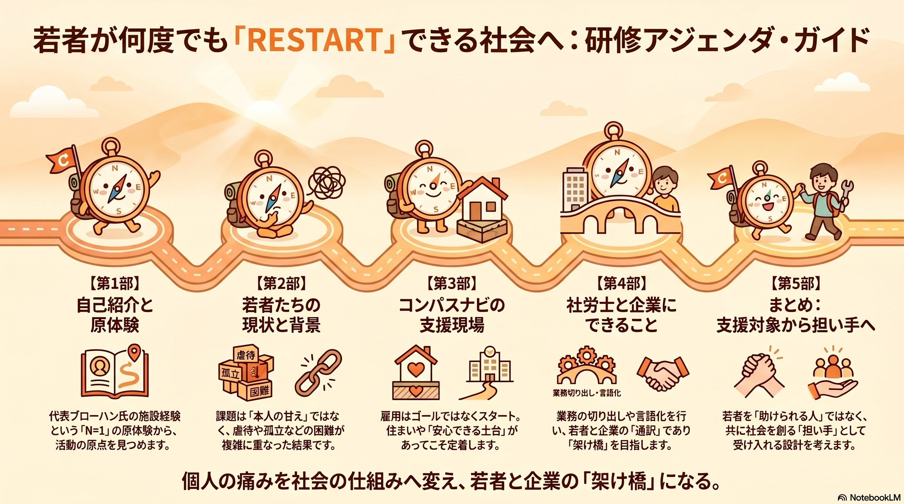

頼る人が誰もいない若者への伴走型支援と、
企業経営における戦略的意義を問う
「すぐに仕事を辞めてしまう」「我慢が足りない」──。
社会はしばしば、若者の離職を「本人の甘さ」という言葉で片付ける。
しかし、その表面に見える現象の下には、幼少期からの虐待やトラウマ、無戸籍・無国籍による行政手続きの壁、頼れる大人の不在、住まいの不安定さ──複雑に絡み合った構造的課題が沈んでいる。
個人の困難は、社会のシステム不全から生じている。
精神論ではなく「環境の不備」として捉え直すこと。
それが、最初のステップだ。

この経験を「傷」ではなく、
「社会を変える力」へ。
だれもがきっかけひとつで
いつでもREスタートできる社会を目指して。
── 一般社団法人コンパスナビ 代表理事 ブローハン 聡
無戸籍・無国籍で出生。母ひとりに育てられ、4歳で義父からの虐待が始まる。他人の過ごす「家」と学校と地域の中で、声なきSOSを上げ続けた。
11歳で児童養護施設に入所。声なきSOSを見逃さなかった先生がいた。14歳、母親が病気で亡くなる。そして18歳、施設を退所──いわゆる「18歳の壁」に直面する。
社会的養護のもとを離れた瞬間、頼れる大人はゼロになる。住まいも、保証人も、相談相手も、すべてが自分で用意しなければならない。
この「N=1」の原体験が、コンパスナビの活動の原点となった。
従来の就労支援は、スキルを付与し、マッチングを行う「点」の支援だった。仕事さえ与えれば解決する、という前提に立っていた。
しかし、地盤が緩い土地に建物を建てても倒壊する。生活基盤が不安定な若者に仕事だけを与えても、維持は困難だ。
食事、住まい、プロの眼差し（保護司など）による安心感があって初めて、就労は「定着」へと向かう。コンパスナビは、この「地盤改良」のプロセスを設計する。
若者のリスタートを支えることは、企業にとっても明確な戦略的価値を持つ。採用・教育コストのサンクコスト最小化から、組織全体の心理的安全性向上まで──その意義は三つの柱で語られる。
採用・教育コストのサンクコストを最小化。背景を汲み取った環境調整により、中長期的な人的資本の安定を図る。
困難を抱える若者が定着できる組織は、全社員にとって「心理的安全性の高い職場」となり、組織全体のレジリエンスが向上する。
職場を社会的孤立を防ぐ「安心の拠点」と位置づけることで、メンタルヘルス不調や法的トラブルを未然に防ぐ民間セーフティネットとして機能。
若者の特性と企業の求める業務をつなぐ「橋渡し役」。コンパスナビ等の外部リソースを企業に導入し、伴走型の受け入れ体制をデザインする「設計者」。
業務の切り出しや言語化を行い、若者と企業の「通訳」であり「架け橋」を目指す。社労士の皆様は、単なる制度の運用者ではない──リスタート可能な社会を実装するキーパーソンである。
共に、新しい社会のインフラを築いていきましょう。
若者を「助けられる人」ではなく、
共に社会を創る「担い手」として受け入れる設計を。